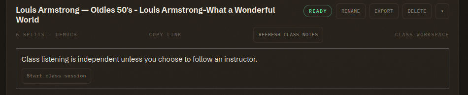

Live Sessions
Lead a listening session from your mixer while students follow the recording on their own devices. Headphones let each student hear the shared passage and control their own volume.

How It Works
Each person controls playback independently when they open a shared split. A live session lets the instructor send playback cues to followers. The cues carry the play or pause state, position, speed, instrument focus, and section. Followers' browsers check for cues every few seconds and adjust their playback. Each device still plays its own audio.
Lead a Session
A current course instructor or authorized guest instructor can open a course split they can read and press Start shared session above the transport. Play, pause, seek, change speed, solo a stem, or select a section as you teach. The session sends those cues to followers. Personal splits and public links cannot host a shared session.
Keep the instructor tab visible. Hiding it pauses playback and requires Resume shared session when you return. The session reserves control for 90 seconds at a time and renews that reservation while you lead. A second instructor cannot take over during an active reservation. Press End shared session when you finish so followers return to independent listening.
Follow a Session
Open the same recording from the class folder and press Follow instructor. If the browser blocks playback, press Join shared audio. Browsers require an initial click before they allow audio to play.
Your mute switches continue to affect what you hear while you follow. You can mute the vocals on your own device even when the instructor plays every stem. Press Leave shared session whenever you want independent control. If the connection drops, press Retry session connection, then choose Follow instructor again.
Plan for a Short Delay
Followers receive cues periodically and may take a few seconds to reach the instructor's position. Pause at the passage before asking the class to describe it. For a question about 1:10, let everyone reach that time before you play again.
A hidden follower tab pauses audio. When students return to the tab, they can resume through Join shared audio. Live mode keeps the course's existing access rules. Notes retain their permissions, and Listening Guy conversations stay outside the shared session.
Classroom Setup
Test the room's Wi-Fi with the expected class size because each follower checks the server every 2.5 seconds. Ask students to bring headphones. If the room has a projector, display your mixer so students can see which stems they hear.